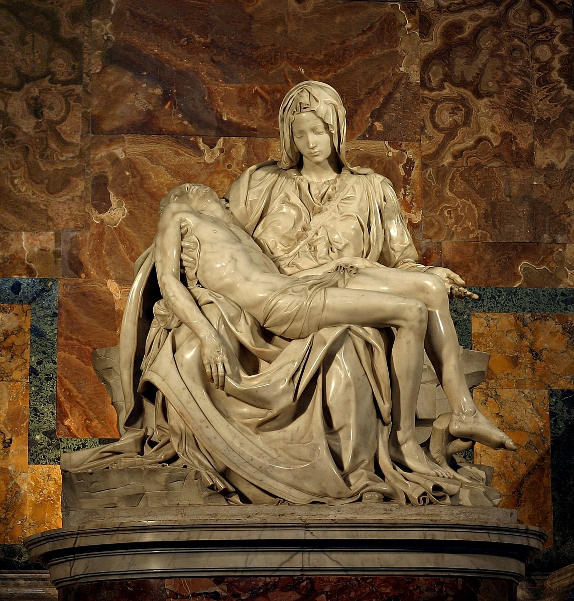

Sculpture Gallery Showcase
Here are my top favorite pieces of sculptures from a variety of periods.
 This metal sculpture depicts a marching figure that is forging ahead. This figure is symbolic of the Futurist movement showing the dynamic speed of the machine age. I like this sculpture because it depicts the fast paced culture that defines our modern era while taking allusions from classical Greek or Roman sculpture.
This metal sculpture depicts a marching figure that is forging ahead. This figure is symbolic of the Futurist movement showing the dynamic speed of the machine age. I like this sculpture because it depicts the fast paced culture that defines our modern era while taking allusions from classical Greek or Roman sculpture.

This sculpture depicts Virgin Mary holding the dead body of Jesus after his crucifixion from the cross. This sculpture was commissioned to go on the old side of St Peter’s Basilica but now resides in New St. Peter’s Basilica in Rome. I like this sculpture because of how detailed the sculpture is in relation to clothing and human skin.
 This sculpture depicts Apollo's pursuit of Daphne when struck by Cupid’s arrow, and Daphne makes a prayer to change her body to a tree due to this chase. This sculpture resides in the Borghese gallery in Rome. I like this sculpture because it shows the transformation from skin to wood.
This sculpture depicts Apollo's pursuit of Daphne when struck by Cupid’s arrow, and Daphne makes a prayer to change her body to a tree due to this chase. This sculpture resides in the Borghese gallery in Rome. I like this sculpture because it shows the transformation from skin to wood.
 This sculpture depicts the movement of the bird in flight without any of its physical attributes. This sculpture is part of a series. I like this sculpture because of its simplicity of depicting movement in an abstract way.
This sculpture depicts the movement of the bird in flight without any of its physical attributes. This sculpture is part of a series. I like this sculpture because of its simplicity of depicting movement in an abstract way.
 The sculpture depicts an episode where the saint describes the ecstasy of the pain experienced by an angel repeatedly piercing her heart multiple times. This sculpture resides in Cornaro Chapel in Rome, Italy. I like this sculpture because it gives an epithermal quality while adhering to the church’s architecture.
The sculpture depicts an episode where the saint describes the ecstasy of the pain experienced by an angel repeatedly piercing her heart multiple times. This sculpture resides in Cornaro Chapel in Rome, Italy. I like this sculpture because it gives an epithermal quality while adhering to the church’s architecture.
 This sculpture depicts the agony and suffering that is universally experienced by humans. Rodin was initially inspired by Dante’s Inferno when creating this work. I like this sculpture because it is characterized by chaotic representations of figures yet adheres to the structured order of the doors.
This sculpture depicts the agony and suffering that is universally experienced by humans. Rodin was initially inspired by Dante’s Inferno when creating this work. I like this sculpture because it is characterized by chaotic representations of figures yet adheres to the structured order of the doors.
 This sculpture depicts Lacoon, the priest of Apollo, warning of taking the wooden horse into Troy, and Athena and Poseidon releasing serpents killing the priest and his sons in response. This sculpture is important because due to Lacoon’s warning, Aeneas was able to flee Troy and found Rome. I like this sculpture because it shows the twisting of figures in agony against the serpents.
This sculpture depicts Lacoon, the priest of Apollo, warning of taking the wooden horse into Troy, and Athena and Poseidon releasing serpents killing the priest and his sons in response. This sculpture is important because due to Lacoon’s warning, Aeneas was able to flee Troy and found Rome. I like this sculpture because it shows the twisting of figures in agony against the serpents.
 This sculpture depicts a veiled Virgin Mary with her eyes closed and her head tilted downward. This sculpture was an important national symbol to the Italian people as it symbolized Italy as a unified country. I like this sculpture because it shows the artist’s prowess to manipulate marble with how its drapery envelops Virgin Mary.
This sculpture depicts a veiled Virgin Mary with her eyes closed and her head tilted downward. This sculpture was an important national symbol to the Italian people as it symbolized Italy as a unified country. I like this sculpture because it shows the artist’s prowess to manipulate marble with how its drapery envelops Virgin Mary.